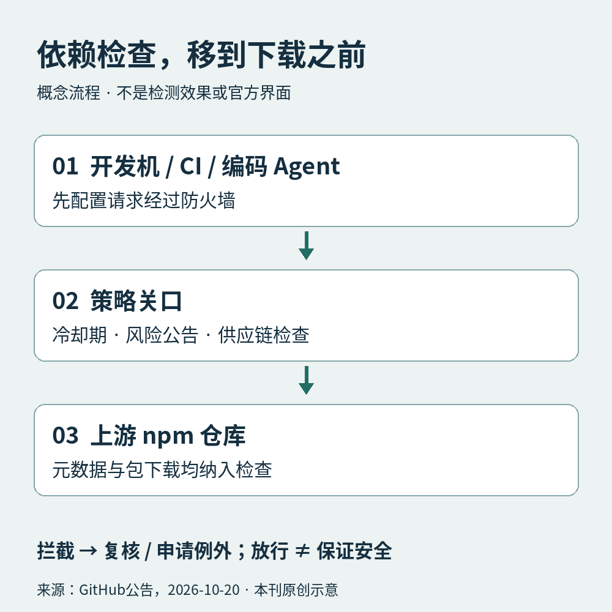

01 / 工程动态 · 2026-10-21
凭据会到期，工具负责接棒
一次登录不变，背后的通行证可以轮换。
官方公告。GitHub CLI在公开预览中加入可过期、自动刷新的OAuth凭据。从v2.103.0起，用户可在登录时选择启用；工具同时保存短期访问令牌与轮换的刷新令牌，按需更新。现有登录和手动提供的令牌不会因这次发布自动改变。
GitHub建议HTTPS Git操作使用gh作为凭据助手，并建议Git 2.46或更新版本，以便标记凭据期限。服务器不支持时可能回退到不过期令牌，因此“请求了短期凭据”仍需核验实际结果。
编辑解读。工程上变化最大的是“取一次、用很久”的假设。一个后台脚本若把访问令牌缓存整夜，前半程成功不代表后半程仍有效。应让具备刷新能力的认证层管理生命周期，分别处理到期、撤销与权限不足；不要把所有认证失败都当成可重试的网络抖动。
边界。缩短访问令牌寿命能限制这类令牌泄漏后的有效窗口，却不能代替刷新凭据的保护或最小权限设计。以上是公告机制及编辑建议，不是本刊对泄漏风险降幅的实测。
02 / 后端架构 · 2026-10-20
代码还没运行，安装入口已值得检查
把依赖治理放在Agent和包仓库之间。

本刊原创概念图，依据GitHub 2026-10-20公告；箭头表示请求路径，不是延迟、检测率或官方产品界面。
官方公告。GitHub package firewall面向Enterprise Cloud进入公开预览，当前仅支持npm包。管理员可配置冷却期、风险公告检查以及供应链检查；开发机、CI和编码Agent需配置为通过它访问上游，包列表元数据与实际下载都会经过策略评估。误拦截可申请例外。
服务边界。预览期免费，公告称正式可用后按使用量收费；这不是所有GitHub账户自动启用的防护。本文记录发布时状态，没有替任何仓库开启或购买服务。
编辑分析。锁文件回答“这次装哪个版本”，入口策略回答“这个版本现在允许进入吗”。两者可以协作：前者减少漂移，后者提供更新的风险判断。冷却期也不是越长越好，紧急修复可能需要更快进入；例外应写明原因、范围和复查时间，避免成为永久旁路。
对会自行安装工具的Agent，还应观察请求是否确实经过关口，以及被拦截后是否停止。模型说“依赖安全”不能替代网络路径和策略记录。放行只是当前规则下的判断，不能证明包里没有未知问题。
03 / AGENT · 历史论文回顾
ReAct：让外部反馈进入下一步
能查资料，不等于每次都答得更准。
历史坐标。ReAct首次提交于2022年10月6日，本文阅读2023年3月10日的v3版，不是今日新论文。方法把推理文本、任务动作与环境观察交错组织：先判断缺什么，再调用工具，再用返回的信息调整后续行动。问答实验的动作包括搜索页面、查找片段和结束回答。
方法示意 形成下一步计划 → 调用工具 → 接收观察 → 修订计划或回答。
这是论文交互结构的文字概括，不是模型内部机制的完整解释，也不是执行成功的证明。
作者实验。论文表1中，PaLM-540B的ReAct在HotpotQA上为27.4 EM，CoT为29.4；在FEVER上则为60.9%准确率，对照56.3%。EM检查答案是否与标准答案完全匹配，FEVER准确率检查事实判断标签是否正确。它们衡量不同任务，不能相加，也不能当作生产Agent成功率。
局限。原文讨论了低信息量检索与重复行动造成的失败。工具把外部信息引入流程，也把检索质量、动作选择和停止条件引入了误差链。实验采用当时的模型和特定任务设置，数字不代表今天所有模型的收益。
编辑应用建议。适合需要多步查证的检索助手或有明确工具反馈的工作流。落地时可以记录工具输入、返回证据与最终验收结果，为空检索设置改写或停止条件；别用一段流畅的过程说明代替最终结果核对。可观察的行动记录有助排错，但它本身不会自动赋予系统更多权限。
04 / 科技趣闻 · 天文观察
彗星没来，留下的碎屑先来敲门
夜空里的一条亮线，可能是哈雷彗星留下的旧痕迹。
NASA观测提示。10月1日发布的当月指南指出，猎户座流星雨在10月21日至22日前后达到峰期，来源是哈雷彗星留下的微小碎屑。它们看起来从猎户座方向辐射，但亮线可以划过天空不同区域，不必只盯着一个点。
今年明亮的盈凸月会淹没部分暗流星。NASA建议寻找暗处，在月落后、黎明前的窗口观察并给眼睛时间适应黑暗。该指南的日期提示不是针对某座中国城市计算的精确峰值时刻；本地天气、月落与天亮时间仍决定实际机会。
编辑观察。这是一种很有趣的“延迟抵达”：留下物质的天体与眼前的现象不必同时出现。读天文预报也和读系统指标相似——一个峰期标签有用，却无法保证某一分钟一定看见。今晚没有拍到，不等于天空没有发生。